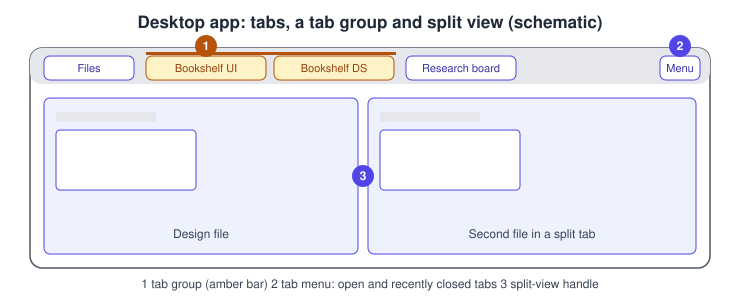
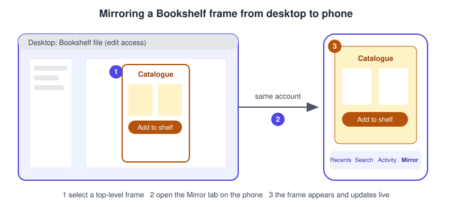
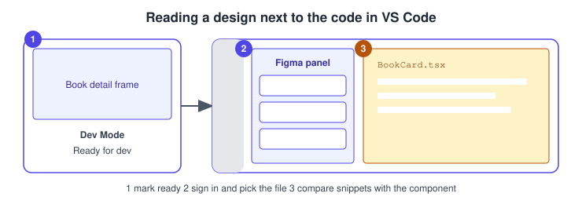

Desktop, Mobile and VS Code
|
This content was generated with the assistance of AI and should be verified against the official documentation before being relied on in production. |
This page was checked against the official Figma documentation on 2026-10-30, for the UI3 interface (the only interface since 2025-04-30). Figma is a continuously deployed service without version numbers, so dates say when a behaviour was last confirmed. It covers four ways of reaching Figma besides the browser tab: the desktop app, the mobile app, the Figma for VS Code extension and the Figma Chrome extension.
Plan and seat requirements differ by surface. The desktop app and the mobile app can be installed and signed in to on any plan, including Starter (the free plan). What you can do inside depends on your seat in each file, as described in Plans, seats and AI credits; for example, mirroring needs edit access to the file. Figma for VS Code needs a paid plan and a Full or Dev seat. The pages consulted for this check were the desktop guide, the mobile guide, the mirroring article and the VS Code article listed in the references. The statements on this page that I could not find stated in those pages are labelled as such. I did not verify the GA or beta state of the Chrome extension’s newer capabilities, so that part is described cautiously.
The running scenario is Bookshelf: a designer works on the catalogue and book detail screens, checks them on a phone, and a developer compares them with a React component.
The desktop app
The desktop app is the same editor as the browser version, packaged for macOS (12 or later) and 64-bit Windows 10 or later, with separate downloads for Intel and Apple Silicon Macs and for Windows on Arm. It adds a tabbed window of its own, and access to the fonts installed on your computer. The app prompts you when a newer version exists, and older versions lose support six months after their release.
Tabs, tab groups and split view
The desktop app shows every open file as a tab. The tab bar and its right-hand menu are the places to look in UI3:
-
Right-click a tab and choose Pin tab to keep it at the start of the bar; the same menu offers Unpin tab, Close other tabs and Close all tabs.
-
The menu at the top right lists the open and recently closed tabs across all windows, so a closed file can be reopened from it.
-
Each tab has its own audio icon, and a tab must be muted separately.
-
Drag a tab out of the window to open it in a new window.
-
Right-click a tab and choose Add to Tab Group, then New Tab Group or an existing group. A group has a name and a colour. Right-click the group name to rename it, change the colour, ungroup it (the tabs stay open) or delete it (the tabs close).
-
Drag a tab to the left or right side of the canvas, or right-click it and choose Open in Split Tab, to see two files side by side. Drag the central handle to resize the halves.
The desktop guide does not list keyboard shortcuts for tabs or split view, so none are given here. The general shortcut that works in the editor is the Actions menu, opened with Cmd+K on macOS and Ctrl+K on Windows, which is described in Navigation, shortcuts and actions.

Procedure: group the Bookshelf files you use together.
-
Open the Bookshelf UI file and the Bookshelf design system file in two tabs.
-
Right-click the first tab and choose Add to Tab Group, then New Tab Group.
-
Name the group Bookshelf and pick a colour.
-
Right-click the second tab, choose Add to Tab Group and select the Bookshelf group.
-
Right-click the second tab and choose Open in Split Tab to compare the screen with the library component.
Fonts
The desktop app can use the fonts installed on your computer. The font installer, called FigmaAgent, runs silently in the background with no interface; it detects installed fonts and makes them available in Figma, and it serves them on a localhost server that accepts connections only from figma.com. A file that uses a font you do not have shows a missing-font warning, and the usual cure is to install the font on the computer, or to replace it with one you have.
The font installer has its own troubleshooting page: Figma Learn: Troubleshoot the Figma Font installer.
The beta app
Figma offers a beta build, installed as Figma Beta next to the normal app. It is for testing bug fixes and performance changes early and does not include unreleased features. You may sign in with a different account in each app. Because it is a test environment, switch back to the regular app for important work.
The mobile app
The mobile app for iOS (16 or later) and Android (8 or later) is a companion for viewing and reviewing, not an editor. The guide lists four tabs: Recents, Search, Activity (comment notifications) and Mirror. You can open files, boards, slide decks and prototypes, pan and zoom, switch pages, comment, reply, react, resolve your own comments, share, export frames, favourite items and receive push notifications. Figma Design files and Slides decks cannot be edited on mobile, and Make files can only be previewed, shared and commented on. FigJam boards can be edited on the iPad app, including with Apple Pencil. Beta versions of iOS and Android are not supported.
Present a prototype on a phone
-
Sign in to the mobile app.
-
Find the Bookshelf file in the Recents or Search tab and tap it.
-
Open the menu and choose View prototypes.
Frames need prototype connections to be interactive. A prototype link opened in a mobile browser instead supports only hotspot interactions, and the browser’s back action is not supported.
Mirror a frame to a device
Mirroring shows a frame selected on your computer live on your phone, scaled to the screen width, which is the quickest way to judge a design at real size.
-
Sign in to Figma on the computer and in the mobile app with the same account.
-
On the computer, open the Bookshelf file and select a top-level frame, such as the Catalogue frame.
-
On the phone, open the Mirror tab. The frame appears and updates as you edit.
The devices do not have to share a Wi-Fi network, and cellular data works. Anyone with edit access to the file can mirror on every plan. If the device is not supported by the app, open figma.com/mirror in the phone’s browser, sign in with the same account and select a top-level frame on the computer.

Figma for VS Code
Figma for VS Code is an extension from the Visual Studio Marketplace that brings Dev Mode information into the editor. It needs a paid plan and a Full or Dev seat, and asks you to sign in to your Figma account the first time. Its main parts, from the official article:
-
Inspect: browse frames in a grid or focus view, search and filter, and show only sections marked ready for development.
-
Code: code snippets, modes and styles, with a choice of language and units.
-
Dev resources: links from a layer to code; if a matching implementation exists in the codebase, the file opens in VS Code.
-
Component properties and assets: view properties and export assets for the selected layer.
-
Auto-complete: suggestions based on the selected layer, useful for components that have no implementation yet.
-
Comments and notifications: see comment notifications in real time and reply from the editor.
-
Plugins: run private plugins in VS Code.
The extension is separate from the Figma MCP server, which is covered in Figma MCP server. The article I read does not mention Code Connect, compare features, Cursor support or the MCP server, so this page does not describe them as parts of the extension.

Source: Figma Learn: Figma for VS Code
Procedure: open the Book detail design from VS Code.
-
Install Figma for VS Code from the Visual Studio Marketplace and sign in when asked.
-
Click Figma in the activity bar.
-
Under Files in the primary sidebar, select the Bookshelf file and the Book detail frame.
-
Choose the language and units in the code view and compare the values with the React component.
Alternatively, from Dev Mode set CSS as your preferred code language, select a top-level frame, open the options menu in the Inspect panel and choose Open in VS Code. To sign out, run the command Figma: Log out from the Command Palette. Dev Mode itself is described in Dev Mode.
Source: Figma Learn: Figma for VS Code
The Chrome extension
Figma publishes a Chrome extension. The help centre describes it as a way to capture webpages as editable layers and to attach Figma files to Google Calendar events. It cannot run on internal Chrome pages or on the Chrome Web Store. A newer help article about turning web pages into editable design layers says that code to canvas is limited to paid plans during its beta. I did not open that article in full, so check it before relying on the beta details. Many other extensions with "Figma" in the name are unofficial third-party tools, not Figma features.
Corrections to older guides
Older Figma books describe the desktop app mostly as a font solution and a way to avoid the browser, and some describe an early mobile app. Since then the desktop app gained tab groups, pinned tabs and split view, the mobile app got its Mirror tab flow (the older Mirror wording in books no longer matches the current app), and an iPad app edits FigJam boards, which contradicts the older statement that Figma does not run on iPad. Books that place the font installer as a separate step before 2022 predate the FigmaAgent behaviour described above. For the interface in general, books written before 2025-04-30 show the retired old interface; follow the UI3 locations on this page instead.